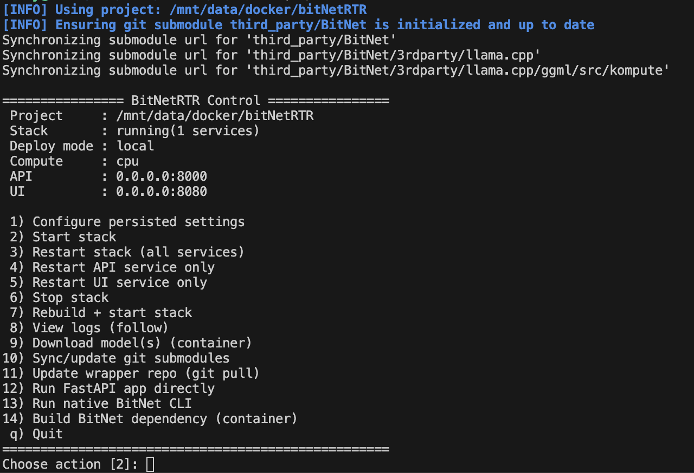
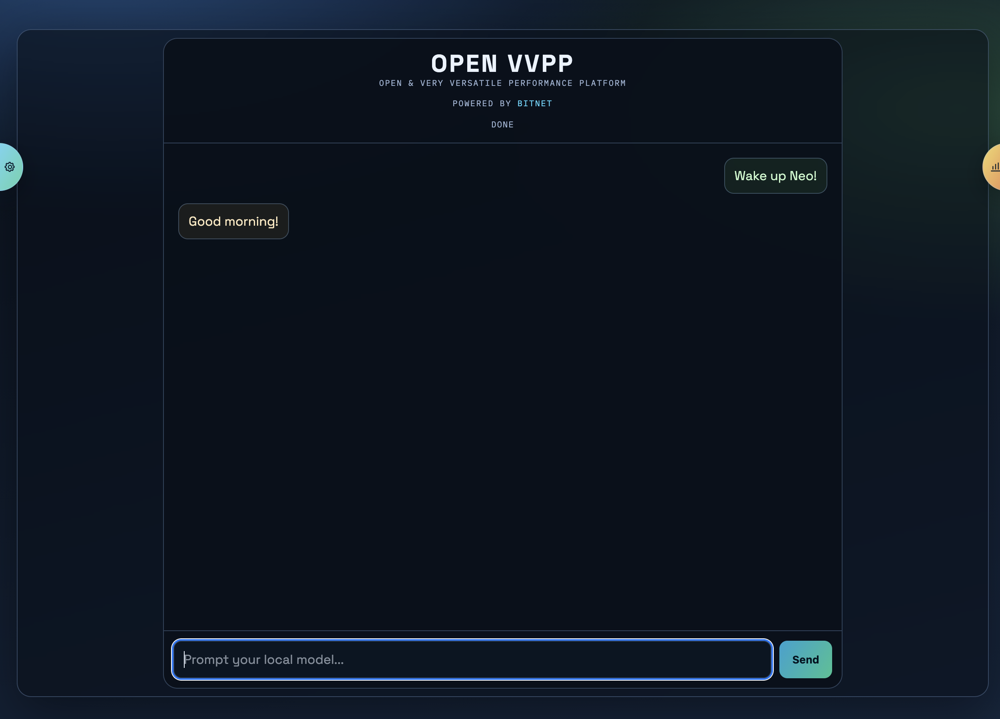
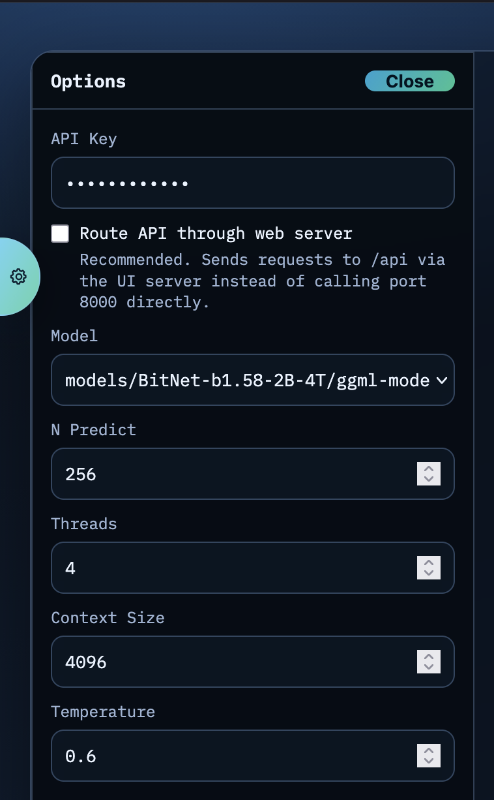
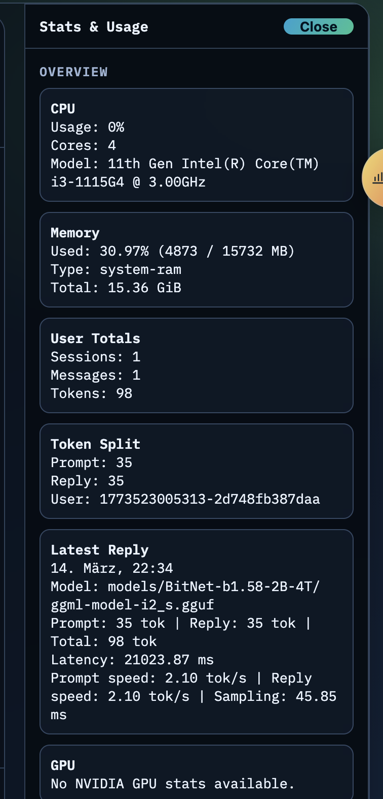

Table of Contents
BitNet ist ein Framework von Microsoft ( OpenSource! ), das die Nutzung von 1-Bit-LLMs relativ unkompliziert ermöglicht, und zwar auch auf günstiger Consumer-Hardware.
Der technische Hintergrund
Was sind 1-Bit-LLMs? LLMs bestehen im Prinzip auf Millionen von Zahlen - die sogenannten Parameter und genauer genommen: Kommazahlen - vulgo Floats! Diese haben in der Regel eine Genaugkeit von 16-Bit oder eigentlich sogar 32-Bit. 32 Bit erlauben 7 Stellen nach dem Komma. Stell dir also mal Pi vor (weil heuteg ja World-Pi-Day ist): In 32 Bit könntest du Pi mit 7 Nachkommastellen speichern: 3.1415926. (Wie das ganze mit den Kommazahlen und binären Zahlen funktioniert, mit Exponenten und Mantissen, habe ich hier genauer erklärt ).
Bei 1-Bit-LLMs werden die Parameter “gerundet” (bzw. eher quantisiert). Und damit gibt es nur noch -1, 0 oder 1. Anstatt 0.0280101 oder -0.259384 und so weiter.
Das spart erstmal Speicherplatz. Zwei Zustände lassen sich in einem Bit speichern - also 0 oder 1. Kennen wir alle. Dahinter steckt eine Formel und die lautet:
$\text{Anzahl der Bits} = \log_2(\text{Anzahl der möglichen Werte})$
Da wir nun aber drei Werte abbilden (-1, 0 und 1), sieht die Formel so aus:
$\text{Anzahl der Bits} = \log_2(3) \approx 1.58$
Und daher rührt auch der Name 1,58-Bit-LLM. Eine theoretische Genauigkeit, den natürlich kann man nicht 1,58 Bit speichern. Aber man kann mehrere Parameter in einem Byte speichern. Das nennt man Packing.
OK. Wenn du bis hierhin durchgehalten hast, stellst du dir sicher jetzt die Frage, warum man denn überhaupt 3 Werte braucht (Ternärsystem)? Weil 0 für unwichtig und 1 für wichtig in einem LLM nicht die erforderliche “Qualität” liefern würden. Im Ternärsystem kann -1 als “total unwichtig”, 1 als “total wichtig” und 0 als “völlig egal” interpretiert werden. Das ist ein wichtiger Erkenntnisgewinn, wenn es um Sprache geht.
Deswegen gibt es also 1-Bit-LLMs, die auf diesem Ternärsystem basieren. Und das BitNet Framework erleichtert die Nutzung solcher Modelle.
BitNet RTR
Worum geht es eigentlich? Um einen leicht zu installierenden Wrapper für das BitNet-Framework, den ich gebastelt habe, um es direkt mal auf meinem kleinen, sparsamen NAS zu testen. Das Repo dazu findest du dort:
https://github.com/nickyreinert/bitNetRTR
Und die Installation kannst du relativ einfach anstoßen:
1curl -fsSL https://raw.githubusercontent.com/nickyreinert/bitNetRTR/main/install.sh | bash
Was passiert hier?
Zunächst mal ziehst du dir das Repo auf deinen Computer, inklusive der Abhängigkeit (nämlich dem BitNet-Framework von Microsoft). Du erhälst dazu einen Docker-Container, in dem der ganze Spaß installiert wird - dein System bleibt sauber. Von draußen kannst du das ganze System steuern:

Und im Browser sieht das dann so aus:

Der ganze Trödel ist dafür ausgelegt, lokal zu laufen. Das Backend ist zwar per API-Key geschützt, aber ausgefeilte Sicherheitsmaßnahmen wurden nicht implementiert. Für lokale Zwecke ist das völlig ausreichend.
In der linken Sidebar kannst du ein anderes Modell auswählen und ein paar Conversation-spezifische Parameter anpassen. Nichts besonderes:

Und dann gibt es noch einen kleinen Statistik-Bereich auf der rechten Seite. Wie du siehst, habe ich nicht zu viel versprochen: Auf der Kiste läuft eine alte 11th Gen Intel CPU - die für einen kleinen Chat aber trotzdem noch zu haben ist:

Mehr gibt es hier eigentlich auch nicht zu sehen. Ich habe den Spaß “Open VVPP” genannt. Keine Ahnung warum. ( ͡° ͜ʖ ͡°)
Viel Spaß!
Zusammenfassung
BitNet ist ein Framework von Microsoft, das die Nutzung von 1-Bit-LLMs relativ unkompliziert ermöglicht, und zwar auch auf günstiger Consumer-Hardware. In diesem Artikel erkläre ich kurz, was 1-Bit-LLMs sind, warum sie interessant sind und stelle meinen BitNet RTR Wrapper vor, mit dem man diese Modelle einfach testen kann.
Hauptthemen: LLMs Quantisierung BitNet 1-Bit-LLMs Ternärsystem
Schwierigkeitsgrad: Fortgeschritten
Lesezeit: ca. 3 Minuten